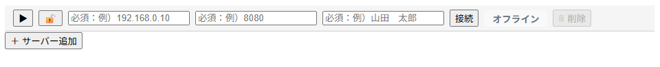
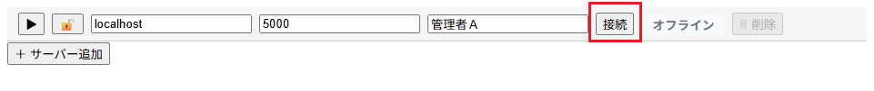
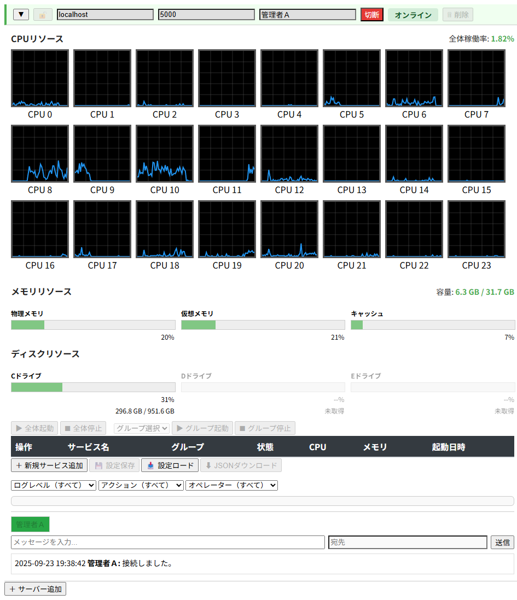
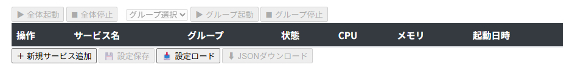
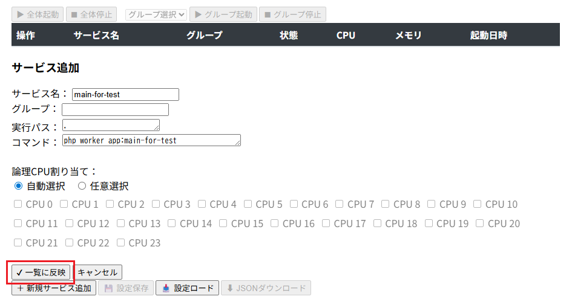
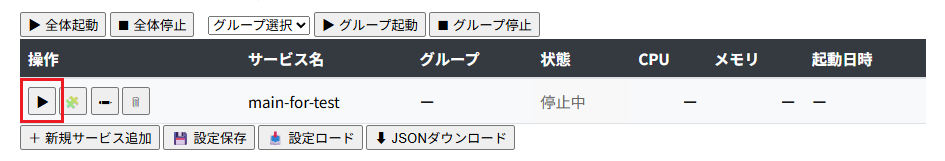
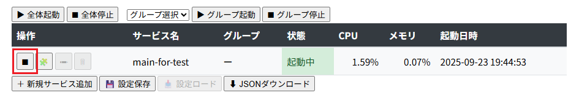
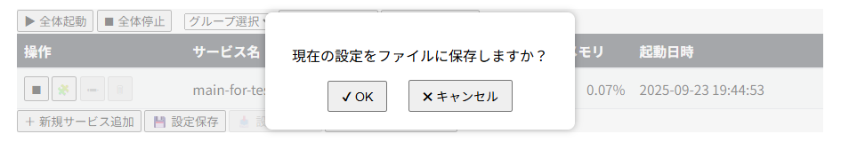

【DevOps環境】
はじめに
SOCKET-MANAGER Framework の RuntimeManager の DevOps環境は、アーキテクチャページで紹介されている CUEI/O モデルに基づいて設計されています。
このモデルにより、SOCKET-MANAGER Launcher を活用したサービス運用が可能となり、GUIランチャーを通じてサービスの起動・停止・監視・設定管理を一元化できます。
本記事では、DevOps環境における SOCKET-MANAGER Launcher の導入と連携手順を中心に解説します。
CUEIは Communication（通信抽象化）、Union（共有基盤）、Event（非同期処理）、IPC（サーバー間通信） の4要素で構成され、効率的かつスケーラブルな通信処理を実現します。
これに Operation（運用管理） を加えたものがCUEI/Oであり、開発から運用までを一貫してカバーする包括的なモデルです。
※ CUEI、CUEI/Oに関する詳細な説明は▶アーキテクチャをご覧ください。
そのため、DevOps環境を構築する際にCUEI/Oモデルは理想的な準拠基盤となります。
さらに、SOCKET-MANAGER Launcher環境は SOCKET-MANAGER Framework上の新規開発環境としての側面も持ち合わせており、以下の特徴を備えています。
このモデルにより、SOCKET-MANAGER Launcher を活用したサービス運用が可能となり、GUIランチャーを通じてサービスの起動・停止・監視・設定管理を一元化できます。
本記事では、DevOps環境における SOCKET-MANAGER Launcher の導入と連携手順を中心に解説します。
CUEI/Oモデルとは
CUEI/Oモデルは、SOCKET-MANAGER Frameworkが採用する「CUEIアーキテクチャ」を運用領域まで拡張した設計思想です。CUEIは Communication（通信抽象化）、Union（共有基盤）、Event（非同期処理）、IPC（サーバー間通信） の4要素で構成され、効率的かつスケーラブルな通信処理を実現します。
これに Operation（運用管理） を加えたものがCUEI/Oであり、開発から運用までを一貫してカバーする包括的なモデルです。
※ CUEI、CUEI/Oに関する詳細な説明は▶アーキテクチャをご覧ください。
DevOps環境がこのモデルに準拠している理由
DevOpsは「開発（Dev）」と「運用（Ops）」を統合する文化・仕組みを重視します。CUEI/Oモデルはまさにその思想と一致しており、- 開発段階ではCUEIの非同期処理や共有基盤により効率的な実装が可能
- 運用段階では/O（Operation）の仕組みにより監視・管理を統合的に実現
そのため、DevOps環境を構築する際にCUEI/Oモデルは理想的な準拠基盤となります。
SOCKET-MANAGER LauncherがDevOps運用に適している背景
SOCKET-MANAGER Launcherは、単なるサービス起動ツールではなく、リソース管理や監視機能を備えたランチャーに加え、コミュニケーションツール（チャット）をビルトインした統合環境です。これにより、開発から運用までを一貫して支援する「CUEI/O」モデルを実現し、DevOpsの実践に最適化されています。さらに、SOCKET-MANAGER Launcher環境は SOCKET-MANAGER Framework上の新規開発環境としての側面も持ち合わせており、以下の特徴を備えています。
-
ローカルなどの開発環境において、デベロッパーが運用を見据えたテストを実施できる
→ 開発段階から実運用に近い条件で検証できるため、リリース後のトラブルを未然に防止。 -
本番環境へそのまま移行可能
→ 開発・検証環境と本番環境の差異を最小化し、デプロイ時のリスクを軽減。
環境の導入方法
以下のコマンドでインストールできます。
インストール完了後、プロジェクトルートで
上記のUsageが表示されていれば、DevOps環境の構築が完了しています。
> composer create-project socket-manager/launcher <インストール先のディレクトリ名>
インストール完了後、プロジェクトルートで
php workerコマンドを実行すると以下のようなUsageが表示されます。
> php worker
SOCKET-MANAGER Framework 1.16.0
Usage:
command [arguments]
main
app:cli CLI サービス管理ランチャー
app:gui GUI サービス管理ランチャー
craft
craft:init <初期化クラス名> 初期化クラスの生成
craft:parameter <UNITパラメータクラス名> UNITパラメータクラスの生成
craft:protocol <プロトコルUNIT定義のクラス名> プロトコルUNIT定義のクラスとステータス名Enumの生成
craft:command <コマンドUNIT定義のクラス名> コマンドUNIT定義のクラスとキュー／ステータス名Enumの生成
craft:main <メイン処理のクラス名> メイン処理クラスの生成
craft:setting <設定ファイル名> 設定ファイルの生成
craft:locale <メッセージファイル名> メッセージファイルの生成
runtime
runtime:init <初期化クラス名> 初期化クラスの生成
runtime:parameter <UNITパラメータクラス名> UNITパラメータクラスの生成
runtime:units <ランタイムUNIT定義のクラス名> ランタイムUNIT定義のクラスとキュー／ステータス名Enumの生成
runtime:main <メイン処理のクラス名> メイン処理クラスの生成
※laravel:commandコマンドに関してはLaravel環境でしか表示されません。上記のUsageが表示されていれば、DevOps環境の構築が完了しています。
常駐型アプリ作成確認
それでは動作確認を兼ねて以下のコマンドを実行し、メイン処理クラスを作成します。
今回は
以下のように表示されれば成功です。
再度
アプリ名
今回は
runtime:mainコマンドを使ってMainForTestという名前で作成します。以下のように表示されれば成功です。
> php worker runtime:main MainForTest
[success] メイン処理クラスの生成に成功しました (MainForTest)
再度
php workerを実行してみます。
> php worker
SOCKET-MANAGER Framework 1.16.0
Usage:
command [arguments]
main
app:cli CLI サービス管理ランチャー
app:gui GUI サービス管理ランチャー
app:main-for-test Command description
craft
craft:init <初期化クラス名> 初期化クラスの生成
craft:parameter <UNITパラメータクラス名> UNITパラメータクラスの生成
craft:protocol <プロトコルUNIT定義のクラス名> プロトコルUNIT定義のクラスとステータス名Enumの生成
craft:command <コマンドUNIT定義のクラス名> コマンドUNIT定義のクラスとキュー／ステータス名Enumの生成
craft:main <メイン処理のクラス名> メイン処理クラスの生成
craft:setting <設定ファイル名> 設定ファイルの生成
craft:locale <メッセージファイル名> メッセージファイルの生成
runtime
runtime:init <初期化クラス名> 初期化クラスの生成
runtime:parameter <UNITパラメータクラス名> UNITパラメータクラスの生成
runtime:units <ランタイムUNIT定義のクラス名> ランタイムUNIT定義のクラスとキュー／ステータス名Enumの生成
runtime:main <メイン処理のクラス名> メイン処理クラスの生成
アプリ名
main-for-testという名前で登録されている事が確認できれば正常にインストールされています。
ランチャーでの起動
ここでは先ほど

接続フォーム
（ランチャーのポート番号はデフォルトで 5000 です）

入力済み接続フォーム
するとランチャーとの接続シーケンスが開始され、以下のように CPU／メモリ／ディスクの各リソース情報やサービス一覧／チャット画面などが表示されます。

接続直後のGUI画面

サービス一覧（サービス未登録状態）
「＋新規サービス追加」ボタンを押すと入力フォームが開くので、必要事項を記入してから「一覧に反映」ボタンを押します。
（同じ環境内で管理する場合は実行パスに"."のみ入力します）

サービス追加フォーム
以下のように確認画面が表示されるので「OK」ボタンを押すと登録が完了します。

サービス追加時の確認ポップアップ表示

サービス追加後の一覧表示
以下はサービスが起動中の画面ですが、「▶」ボタンが「■」に置き換わっているので、これを押すと停止させる事ができます。

サービス起動中の画面
保存された情報は次回以降も同じ設定で読み込まれます。

設定保存時の確認ポップアップ表示
「JSONダウンロード」ボタンを押すと以下のダウンロード用のダイアログボックスが表示されますので、設定ファイルの内容に関わらず現在画面に登録されている最新の設定ファイルをダウンロードする事ができます。ダウンロードしたファイルはバックアップ用として保存しておくか、別の環境の設定ファイルとしてご利用頂けます。

ダウンロード時のダイアログボックス表示
runtime:main コマンドで作成した app:main-for-test のアプリをランチャーで起動してみます。ランチャー本体（内蔵Websocketサーバー）の起動
プロジェクトルートで以下のコマンドを実行してGUIランチャーを起動します。
> php worker app:gui
GUI を開く
app/client/launcher.html のファイルをブラウザで開くと、以下の接続フォームが表示されます。ランチャー本体（内蔵Websocketサーバー）と接続
ホスト名／ポート番号／オペレータ名 を入力してから「接続」ボタンを押します。（ランチャーのポート番号はデフォルトで 5000 です）
サービスの追加
初回はサービスが登録されていないので、以下のようにサービス一覧の部分は見出しのみが表示されます。（同じ環境内で管理する場合は実行パスに"."のみ入力します）
サービスの起動／停止
登録されたサービスは以下の一覧に表示されますので「▶」ボタン押下でサービスを起動できるようになります。設定ファイルの保存／ダウンロード
登録したサービス情報は「設定保存」ボタンを押す事で以下の確認ポップアップが表示され、「OK」ボタンを押す事で所定の場所（setting/services.json）に設定ファイルとして保存されます。保存された情報は次回以降も同じ設定で読み込まれます。
おわりに
今回は常駐型アプリを開発する例として
さらに大きく分けるとRuntimeManager（常駐型アプリ）やSocketManager（ソケット通信アプリ）の開発基盤でもありますので、それぞれで使えるコマンドも異なります。
コマンドの詳細な使い方に関しては、以下のページでご紹介していますので、そちらをご覧ください。
runtime:main のコマンドを使ってメイン処理クラスの作成を行いましたが、この環境は新規開発環境でもあるため、他のコマンドも使って実装していく事になります。さらに大きく分けるとRuntimeManager（常駐型アプリ）やSocketManager（ソケット通信アプリ）の開発基盤でもありますので、それぞれで使えるコマンドも異なります。
コマンドの詳細な使い方に関しては、以下のページでご紹介していますので、そちらをご覧ください。
- 常駐型アプリ開発（runtimeカテゴリのコマンド）⇒▶新規開発環境（RuntimeManager用）
- ソケット通信アプリ開発（craftカテゴリのコマンド）⇒▶新規開発環境（SocketManager用）